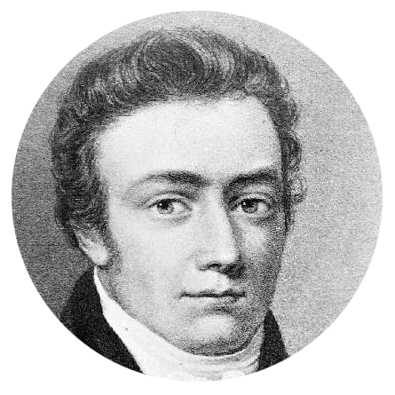
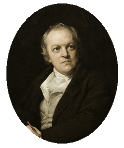

The Project
Our class explored English Romanticism through three great poets.
Each group created an original poem inspired by their themes,
style and imagination.

William Wordsworth
Inspired by nature, emotion and the beauty of the natural world.
I Wandered at Morning
I wandered slowly through the morning fields,
where tender grasses bent beneath the breeze
and a quiet stream, with silver voice,
spoke softly to the listening stones.
The sky unfolded pale and wide above,
its early light upon the distant hills
falling gentle as a thoughtful hand
upon the waiting earth.
No human sound disturbed that sacred hour—
only the lark that rose in singing flight
and leaves that whispered to the patient wind.
And there my restless heart grew calm again,
as if the soul, long troubled by the world,
had found in Nature’s silent company
a truth more simple than all human thought
Written by Gaeta Gennaro, Nunziante Vito, Castagna Cosimo, Materazzo Emanuele, Voza Raffaele

Samuel Taylor Coleridge
Inspired by mystery, imagination and the supernatural.
The whispering mere
Beneath the moon I stood in the old wood,
Where branches bent and swayed like gentle men;
A soft wind moved through shadows as it could,
And whispered things I could not hear again.
The lake lay quiet, dark, and deep as sleep.
A silver mist spread slowly on the shore,
As if the earth had dreams it could not share;
The reeds bent low, and owls cried out once more,
While silence hung and trembled in the air.
The night seemed full of watching everywhere.
Then a pale shape moved softly by the lake,
It looked at me, then vanished in the gloom;
The air felt strange, as if it too might wake,
And leave a quiet magic in the room,
That stayed with me beneath the silver moon.
Written by Ardia Manuel, Macellaro Gianmarco, Colangelo Pasquale, Mabo Temidayo, Gorrasi Crescenzo

William Blake
Inspired by vision, symbolism and the contrast between innocence and experience.
Cotton' Bunny
Machines and cotton’s flays
More in all the coming days!
Bunny, bunny,
How’ll you play?
Mommy spun all the wool,
Though, you hardly reach the stool.
Dear bunny, dear bunny
Don't you find it funny?
You’re jumping and laughing,
While the owner is charming.
Giving orders, not much food
Mommy is in a bad mood.
Bunny! Bunny!
Remember when the days were Sunny?
Gray and brown, all you see
How frightened are thee?
The owner’s finances has grown
While you can’t ever seen the dawn.
Written by Masi Alessia, Di Fiore Federica, Rossomando Antonio, Salzano Fiorentino, Giannone Alessia